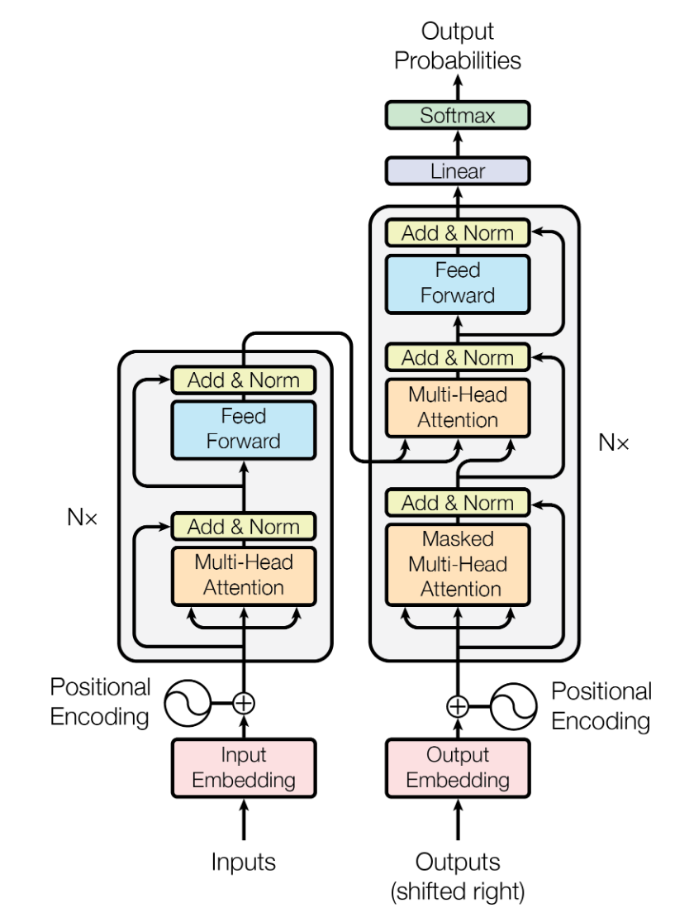
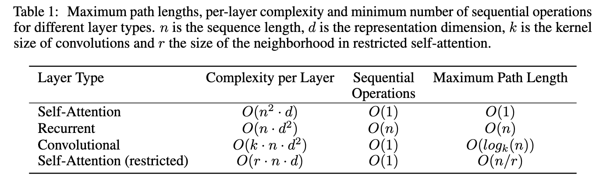
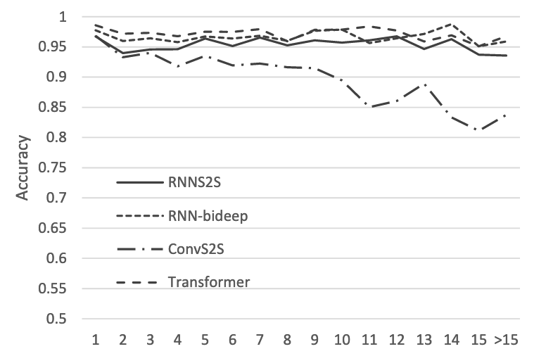
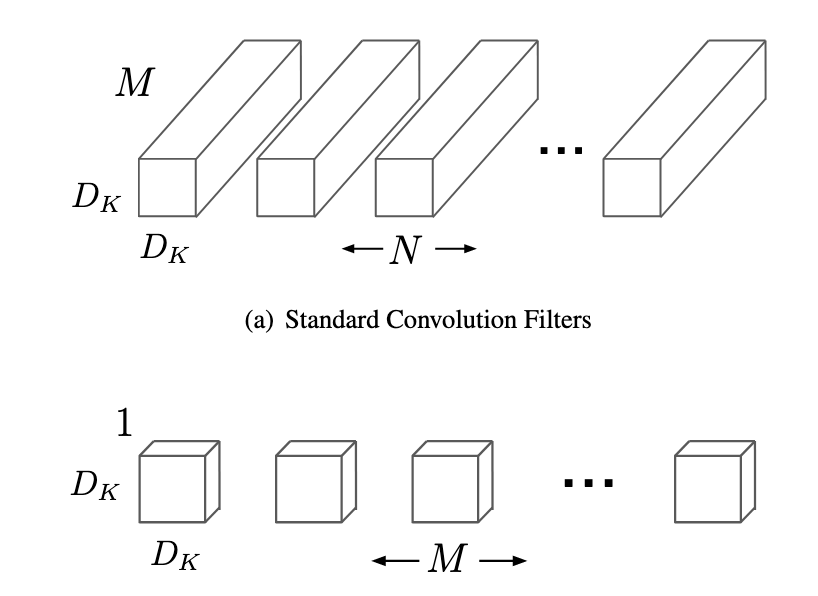
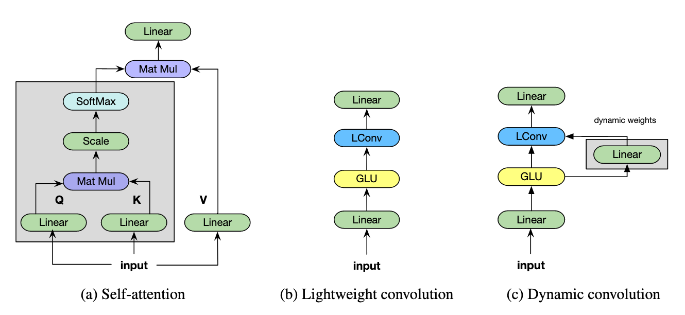
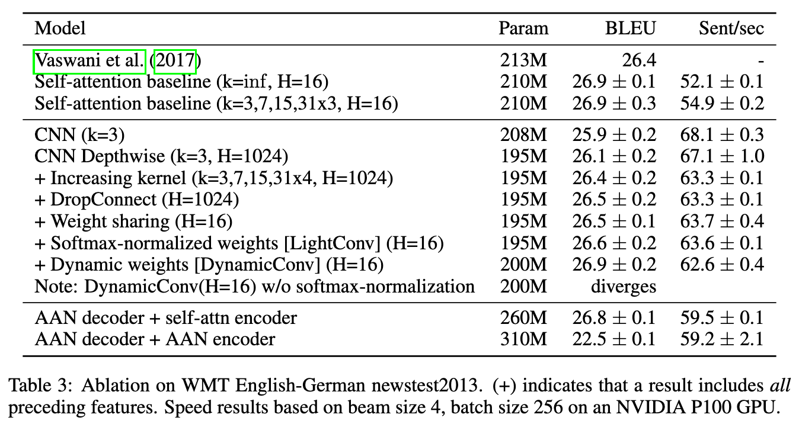

Attention is Overrated
Attention
In the past the standard design of NLP models, was based on recurrent neural networks (RNN) to ensure the model can encode long range dependencies necessary in language modelling. This assumption was called into question with the development of the Transformer, a model where instead of RNNs, self-attention layers are used. The transformer is composed of an encoder and decoder stack of alternating pointwise fully-connected and self-attention layers:
|  |
|---|
| :–: |
| The Transformer. If this isn’t familiar check out the paper or this great blog |
Since then self-attention has been useful in a variety of fields, including computer vision, achieving state of the art in adversarial defence on imagenet, as well as in the Self-Attention GAN.
The transformer model made us question the standard design of NLP models being focused on recurrent neural networks, but even more recently the idea that attention is the key for NLP has been questioned.
Limitations of Attention
The BERT paper showed us that attention isn’t all you need to achieve good results in NLP, because to achieve their state of the art results they leveraged bidirectional LSTMs in addition to the self attention used in the transformer. But later work has shown not only do we need more than attention, we may not need attention at all. First we can review some limitations of attention:
Quadratic Complexity
Attention has a quadratic complexity in input length, meaning attention doesn’t scale well over long distances.
|  |
|---|
| From the Transformer paper |
This is because for each position (there are n), we need to attend to every other position in the input (there are also n), for a total of d dimensions in each location, so in total there are $$n^2d$$ operations needed, where d is the dimension of the input.
Limitations of Attention for Long Range Dependencies
People had speculated that the reason attention was so useful was because it could more easily model long range dependencies in the input, but a recent paper has shown this to be incorrect.
By looking at the performance of CNN, RNN and the transformer on on subject-verb agreement task as the distance between the subject and verb is increased, they showed that self-attention’s performance degrades faster than CNNs or RNNs. To overcome this limitation in performance for long range dependencies, many self attention heads are needed.
|  |
|---|
| *Accuracy on subject-verb agreement task. Attention is worse than CNNs and RNNs! From |
| A Targeted Evaluation of Neural Machine Translation Architectures* |
The Alternative: Lightweight, Dynamic Convolutions
In Pay Less Attention with Lightweight and Dynamic Convolutions, they propose an alternative to self in the form of a two modified convolution layers:
- Lightweight Convolutions - Depthwise separable convolutions with weight sharing
- Dynamic Convolutions - An extension of lightweight convolutions with dynamic weights
Lightweight Convolutions
Lightweight convolutions leverage an innovation that is commonly used in vision to create more efficient architectures, known as Depthwise Convolutions.
Depthwise Convolutions take one channel as input for each convolution, in contrast to the standard convolution, which takes all channels as input . Only taking a subset of channels as input massively reduces the number of parameters, and as was seen in the vision literature still provides good performance.
|  |
|---|
| As shown in MobileNet, depthwise convolutions apply a single filter for each channel. |
Weight Sharing across channels is also added to the depthwise convolution to further reduce the number of parameters. They use the same weights across multiple channels, for a total of H independent weights. In the paper they used a value of $$H=16$$, so instead of learning 1024 different filters, only 16 are learned, in the case that there are 1024 channels.
Using the Depthwise convolution reduces the parameters required from $$d^2k$$ to $$dk$$, where d is the number of channels, and k is filter width. The addition of weight sharing further reduces the number from $$dk$$ to $$Hk$$.
|  |
|---|
| Comparison of self attention, Lightweight convolution and dynamic convolution from Pay Less Attention with Lightweight and Dynamic Convolutions |
Dynamic Convolutions
Dynamic convolutions are an extension of lightweight convolutions, where at each time step a different convolution kernel is created using a linear function. The weights depend only on the current location, not using global context. As indicated below, the dynamic convolution is crucial to get state-of-the-art performance without using self-attention.
Results
They compared the lightweight and dynamic convolutions to the Transformer Big model. For the convolution models, they swapped out the self attention layers with convolution, and increased the blocks increased to 7 in order to keep the number of parameters in both models consistent. Kernel sizes are increased in the deeper blocks, with kernel sizes of of 3, 7, 15 and 31x4, and $$H=16$$ for all blocks.
Lightweight convolutions are competitive with the best methods despite their simplicity, and dynamic Convolutions get state of the art on English-German translation. This shows that self-attention isn’t necessary, and can be replaced with simpler and less computationally expensive convolutions
In addition, this paper did a great ablation study to see exactly where the benefits of this model come from. They showed:
- Wide convolution kernels are necessary to replace self attention
- Weight sharing ($$H=1024$$ to $$H=16$$) doesn’t hurt performance
- Self-attention works even with limited context size
- Dynamic convolution helps, but softmax normalization is needed for convergence
|  |
|---|
| Proper scientific method |
Thoughts
-
It seems an important result here is wider context is important at higher layers, but not important at lower ones. Their dynamic convolution is somewhat similar to self attention, and both still perform well with the limited context size, so long as the context progressively increases.
-
Current SOTA for adversarial images on imagenet uses self-attention layers. Is is possible that these could be replaced using wider, or possibly dynamic convolutions at higher layers?